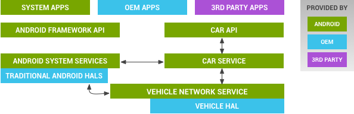

Many car subsystems interconnect with each other and the in-vehicle infotainment (IVI) system via various bus topologies. The exact bus type and protocols vary widely between manufacturers (and even between different vehicle models of the same brand); examples include Controller Area Network (CAN) bus, Local Interconnect Network (LIN) bus, Media Oriented Systems Transport (MOST), as well as automotive-grade Ethernet and TCP/IP networks such as BroadR-Reach.
the Android Automotive hardware abstraction layer (HAL) provides a consistent interface to the Android framework regardless of physical transport layer. This vehicle HAL is the interface for developing Android Automotive implementations.
System integrators can implement a vehicle HAL module by connecting function-specific platform HAL interfaces (e.g. HVAC) with technology-specific network interfaces (e.g. CAN bus). Typical implementations may include a dedicated Microcontroller Unit (MCU) running a proprietary real-time operating system (RTOS) for CAN bus access or similar, which may be connected via a serial link to the CPU running Android Automotive. Instead of a dedicated MCU, it may also be possible to implement the bus access as a virtualized CPU. It is up to each partner to choose the architecture suitable for the hardware as long as the implementation fulfills the interface requirements for the vehicle HAL.
The vehicle HAL is the interface definition between the car and the vehicle network service:
Figure 1. Vehicle HAL and Android automotive architecture
/platform/packages/services/Car/car-lib./platform/packages/services/Car/.vns_policy.xml and vendor_vns_policy.xml.
Located at /platform/packages/services/Car/vehicle_network_service/;
for libraries to access the vehicle network, refer to
/platform/packages/services/Car/libvehiclenetwork/.hardware/libhardware/include/hardware/vehicle.h. For a basic
reference implementation, refer to
hardware/libhardware/modules/vehicle/.For more details, see Vehicle Properties.
The vehicle HAL supports three levels of security for accessing data:
vns_policy.xml)Direct access to vehicle properties is allowed only to selected system components with vehicle network service acting as the gatekeeper. Most applications go through additional gatekeeping by car service (for example, only system applications can control HVAC as it requires system permission granted only to system apps).
AOSP includes the following testing resources for use in development:
hardware/libhardware/tests/vehicle/vehicle-hal-tool.cpackages/services/Car/tests/carservice_test/hardware/libhardware/modules/vehicle/